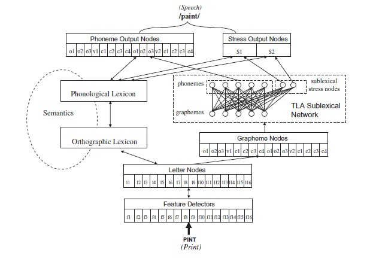

Overview
The Connectionist Dual Process (CDP) model is the leading computational framework for simulating reading aloud in English and other European languages. It builds on the classic dual-route framework — distinguishing a lexical route (whole-word retrieval from an orthographic lexicon) from a sublexical route (rule-governed grapheme-to-phoneme conversion) — and implements both as connectionist networks that interact in parallel.
Unlike purely symbolic dual-route models, CDP's two pathways are connectionist: they develop their own internal representations through exposure to lexical and sublexical statistics, and their outputs compete in a common phonological output buffer. This allows the model to capture the full spectrum of human reading phenomena: frequency effects, regularity effects, consistency effects, length effects, and their interactions.
The CDP family was developed collaboratively by Conrad Perry, Johannes Ziegler, and Marco Zorzi, and has been validated against large-scale human naming-latency databases in multiple languages.
Dual-Route Architecture
→ Phonological Lexicon
(Grapheme-Phoneme Rules)
Lexical Route
Maps orthographic input directly onto stored whole-word phonological representations via an orthographic lexicon and a phonological output lexicon. This route is dominant for high-frequency words and is the only route capable of correctly pronouncing irregular words (e.g., pint, yacht, choir) whose spelling-sound correspondences violate general grapheme-to-phoneme rules.
Sublexical Route (TLA Network)
The Temporal Letter Assembly (TLA) network applies learned grapheme-to-phoneme correspondences to assemble pronunciations letter by letter. It is the only route available for nonwords (novel letter strings never seen before) and provides a critical consistency check for words: when its output matches the lexical route, pronunciation is fast and accurate; when they conflict (irregular words), naming latency increases.
Frequency-Weighted Pathway Competition
The model implements pathway competition: for high-frequency words, lexical dominance suppresses conflicting sublexical output; for rare or novel items, sublexical assembly determines pronunciation. This captures the critical regularity × frequency interaction: irregular words are hardest to read aloud precisely when they are low-frequency, because lexical suppression of the incorrect GPC output is weak.
Model Versions
CDP+
Perry, Ziegler, & Zorzi (2007)
The foundational version. Includes a complete lexical pathway with a graphemic buffer for orthographic representation, yielding superior predictions for monosyllabic English word naming. The first connectionist model to outperform purely symbolic dual-route models on standard benchmarks.
Perry, C., Ziegler, J.C., & Zorzi, M. (2007). Nested incremental modeling in the development of computational theories: The CDP+ model of reading aloud. Psychological Review, 114, 273–315.
CDP++
Perry, Ziegler, & Zorzi (2010)
Extends CDP+ to multisyllabic words and nonwords, adds a stress assignment mechanism, and incorporates a lexicon of more than 32,000 words. Accounts for approximately 49% of reaction time variance in large-scale naming databases — the highest of any computational reading model at the time.
Perry, C., Ziegler, J.C., & Zorzi, M. (2010). Beyond single syllables: Large-scale modeling of reading aloud with the Connectionist Dual Process (CDP++) model. Cognitive Psychology, 61, 106–151.
CDP++.parser
Perry, Ziegler, & Zorzi (2013)
Adds a learned graphemic parsing mechanism that categorizes letter-string positions as onset, vowel, or coda elements. This allows the model to apply position-specific grapheme-to-phoneme rules and improves nonword pronunciation accuracy.
Multilingual Implementations
The CDP architecture has been adapted for three additional languages, each requiring its own lexicon and grapheme-to-phoneme rules. Cross-linguistic comparisons allow the model to make specific predictions about reading difficulty as a function of orthographic transparency.
German CDP+
Transparent orthography; regularity effects are attenuated relative to English. Perry et al. (2010).
French CDP++
Lexicon of 100,000+ words. Semi-transparent orthography with large asymmetry between reading and spelling. Perry et al. (2014).
Italian CDP++
Lexicon of 60,000+ words. Highly transparent orthography; sublexical route is dominant for most words. Perry et al. (2014).
Developmental & Clinical Applications
Beyond adult reading, the CDP framework has been used to model the development of reading through phonological decoding. Simulations show how phoneme-level representations become progressively more robust with exposure, replicating developmental trajectories observed in children learning to read.
The model also provides a mechanistic account of developmental dyslexia: simulated phonological deficits (reduced quality of phoneme representations) and visual attention deficits (attenuated orthographic input) each independently impair reading aloud in ways consistent with observed clinical profiles — providing a computational bridge between neurological impairment and reading behavior.
Key References
CDP+ (English, monosyllables)
Perry, C., Ziegler, J.C., & Zorzi, M. (2007). Nested incremental modeling in the development of computational theories: The CDP+ model of reading aloud. Psychological Review, 114, 273–315.
CDP++ (English, multisyllabic)
Perry, C., Ziegler, J.C., & Zorzi, M. (2010). Beyond single syllables: Large-scale modeling of reading aloud with the Connectionist Dual Process (CDP++) model. Cognitive Psychology, 61, 106–151.
Multilingual extensions
Perry, C., Ziegler, J.C., & Zorzi, M. (2014). CDP++ for French and Italian. Psychological Review.
Original dual-route connectionist framework
Zorzi, M., Houghton, G., & Butterworth, B. (1998). Two routes or one in reading aloud? A connectionist dual-process model. Journal of Experimental Psychology: Human Perception and Performance, 24, 1131–1161.